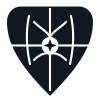

Brand board
ChapelCloud
Technology care for churches — covering, clear, calm. A protective mantle of interlocking plates with a steady witness of light at the center.
Mark anatomy
Shield / mantle — soft geometric crest (sanctuary, covering presence).
Interlocking plates — sweeping panels in presence, deep, and covering blues (enclosure without spectacle).
Witness star — four-pointed gold compass at the center (pillar of light, quiet witness).
Clear space — minimum margin equal to the width of the central star.
Marks
mark.svg
mark-light.svg
mark-alone.svg
favicon.svg

mark-mono.svg
mark-reversed.svg
Lockups
lockup.svg — horizontal
lockup-stacked.svg
Color
#121820#5c6672#f3f5f7#e6eaef#b4bec9#2a4054#1a2b3a#7a94a8#b8923f#e8d4a8Type
Covering presence for ministry rhythms
Source Sans 3 for body and UI. Newsreader (semi-bold) for headlines and the ChapelCloud wordmark. Mission-first, clear, calm — excellence that points beyond us.